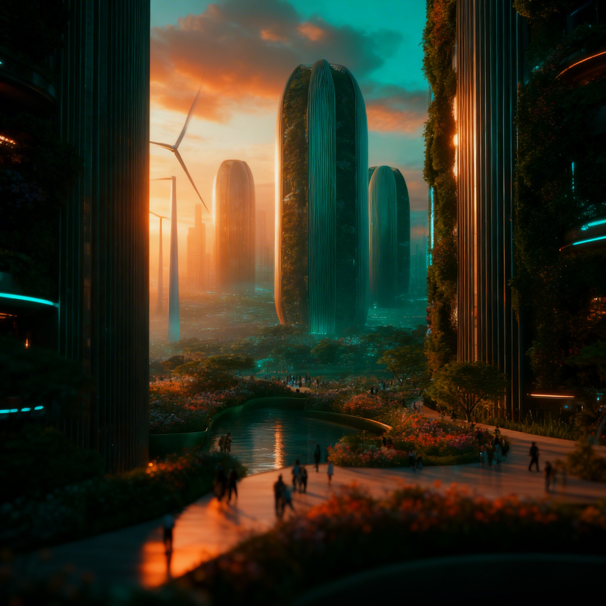
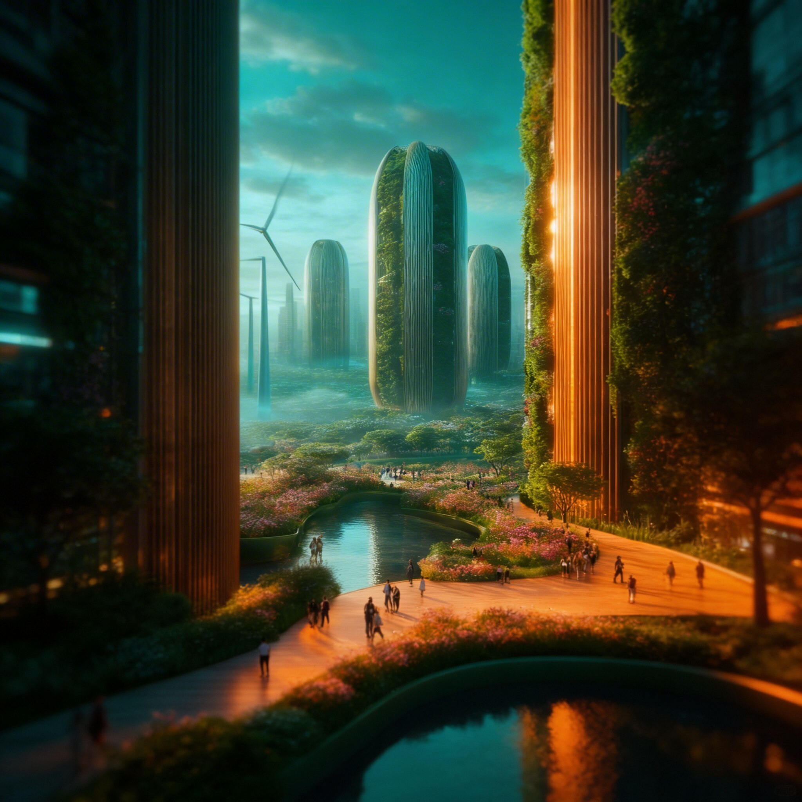
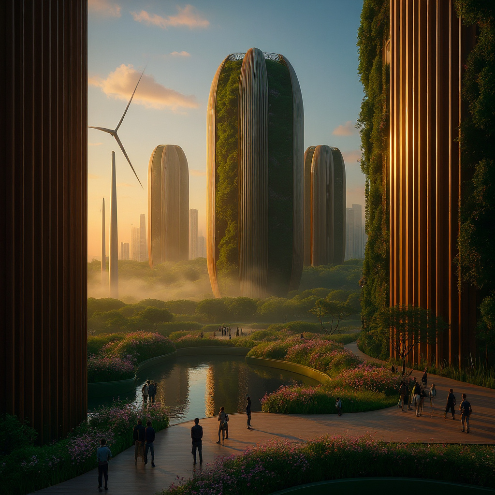
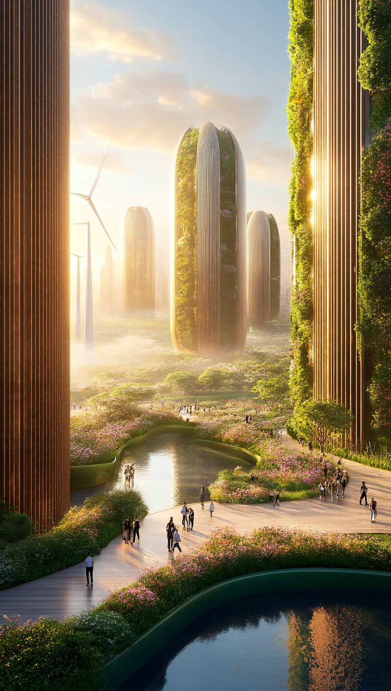
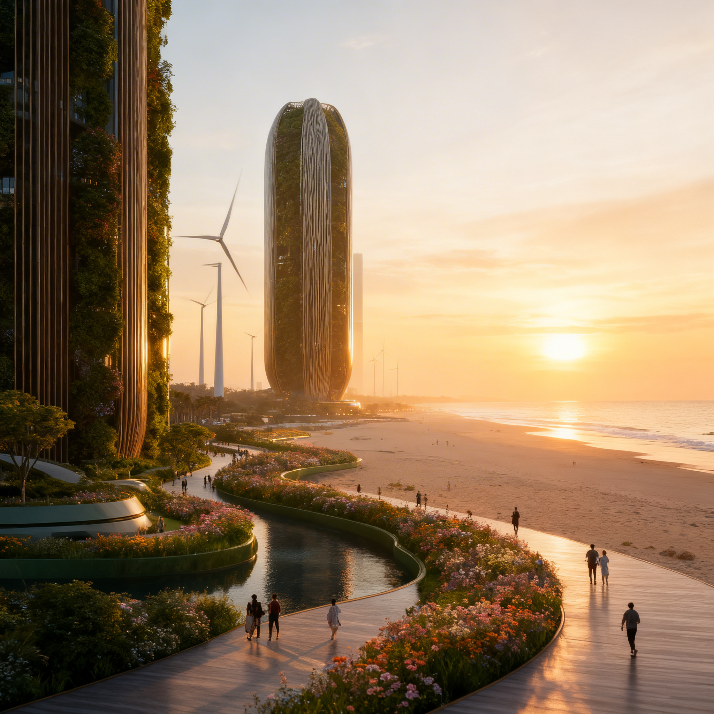
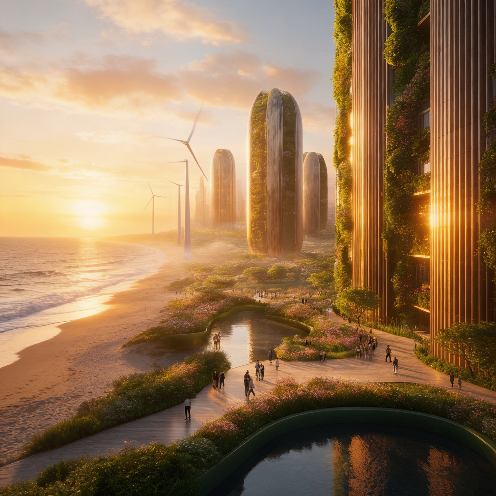

🚀 Model Output Comparison Dashboard
Prompt → Image
View Prompt
A cinematic portrait of a young man sitting in a dimly lit café at night, soft warm lighting from a table lamp illuminating his face, rain visible through the window behind him, shallow depth of field, reflections on glass, shot on a 50mm lens, ultra realistic skin texture, natural imperfections, detailed background, bokeh lights, 4K
flux-2-pro-freepik
Latency: 12.3s
flux-2-turbo-freepik
Latency: 5.2s
flux-dev-freepik
Latency: 5.2s
flux-pro-v1-1-freepik
Latency: 5.2s
seedream-v5-lite-freepik
Latency: 5.2s
runway-freepik
Latency: 5.2s
higgsfield-ai-soul-standard
Latency: 5.2s
Edit (Prompt 1 - Style Transfer)
View Prompt
Transform the image into a cinematic style with dramatic lighting, teal and orange color grading, and shallow depth of field. Keep the subject’s identity unchanged.
Reference Input

seedream-v4-edit
Latency: 18.0s

seedream-v4-5-edit
Latency: 18.0s
seedream-v5-lite-edit
Latency: 18.0s

flux-kontext-pro-freepik
Latency: 18.0s
higgsfield-ai-soul-reference
Latency: 18.0s
Edit (Prompt 2 - Background Replace)
View Prompt
Replace the background with a sunset beach scene with soft golden lighting. Match the lighting direction and color temperature on the subject so it looks natural.

Reference Input

seedream-v4-edit
Latency: 17.9s

seedream-v4-5-edit
Latency: 17.9s
seedream-v5-lite-edit
Latency: 17.9s
flux-kontext-pro-freepik
Latency: 17.9s
higgsfield-ai-soul-reference
Latency: 17.9s
Image → Video (Prompt 1)
View Prompt
A woman sitting at a café, then standing up and walking away, continuous shot, consistent face and outfit, smooth transition, cinematic lighting
kling-v2-6-pro-freepik
Latency: 25.3s
kling-v3-pro-freepik
Latency: 25.3s
runway-gen4-turbo-freepik
Latency: 25.3s
minimax-hailuo-2-3-1080p-freepik
Latency: 25.3s
ltx-2-pro-freepik
Latency: 25.3s
wan-v2-6-1080p-freepik
Latency: 25.3s
seedance-1-5-pro-1080p-freepik
Latency: 25.3s
Image → Video (Prompt 2)
View Prompt
A glass of water falling from a table and shattering on the floor in slow motion, realistic physics, detailed water splashes, cinematic lighting
model-name
Latency: 30.1s
model-name
Latency: 30.1s
model-name
Latency: 30.1s
model-name
Latency: 30.1s
model-name
Latency: 30.1s
model-name
Latency: 30.1s
model-name
Latency: 30.1s
📊 Metrics Interpretation Guide
⚡ Latency
Lower is better.
🎯 CLIP Score
Higher is better (0–1).
✨ Aesthetic Score
Higher is better.
🧩 SSIM
Higher is better (0–1).
📈 PSNR
Higher is better.
🧠 LPIPS
Lower is better.
🎬 Motion Score
Measures movement between frames.
🔄 Consistency
Higher is better.
🖼 First Frame SSIM
Higher is better.
🧪 First Frame LPIPS
Lower is better.
📏 Resolution
Image size (e.g., 1024×1024).
🏆 How to Choose the Best Model:
📚 Metrics References
CLIP Score
Radford et al. (2021) — Learning Transferable Visual Models From Natural Language Supervision
LPIPS
Zhang et al. (2018) — The Unreasonable Effectiveness of Deep Features as a Perceptual Metric
SSIM
Wang et al. (2004) — Image Quality Assessment: From Error Visibility to Structural Similarity
PSNR
Standard signal processing metric for image reconstruction quality
Aesthetic Score
LAION Aesthetic Predictor — trained on human preference datasets
Video Motion & Consistency
Fréchet Video Motion Distance (FVMD) — a metric designed to evaluate motion consistency in generated videos using motion features and Fréchet distance.
Temporal Consistency
Temporally Consistent Transformers (TECO) — evaluates long-term temporal coherence in generated videos.
Resolution
Basic image property indicating pixel dimensions (width × height)
Latency
System performance metric measuring time taken to generate output
Developed by Kanan Pandit